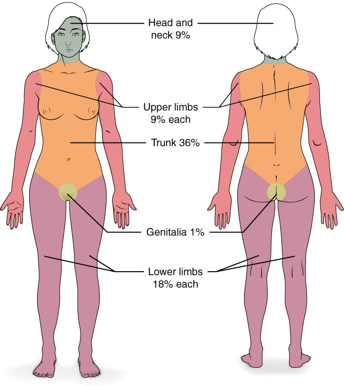

Burn classification and the rule of nines are how clinicians describe a burn: how deep it goes, and how much of the body's surface it covers. This page explains both from the layers of the skin up, then follows what a large burn does to the body's fluid and blood pressure. It also covers how wounds heal, the three common skin cancers, and the everyday skin disorders every health student meets: pressure injuries, acne, stretch marks, calluses and corns, albinism, vitiligo and eczema.
How depth decides what heals
Scrape your knee on the pavement and it heals in a week with no mark. Cut deep into your palm and it leaves a scar. Two things you met in Body membranes and tissue repair explain the difference: whether the lost cells can divide, and whether the tissue's framework survives.
- An injury that stays in the epidermis heals by regeneration. Basal cells at the edges and below divide and restore every layer.
- An injury into the dermis heals partly by regeneration and partly by fibrosis. The deeper it goes, the more of the gap is filled with collagen as scar tissue.
- A deep dermal injury can still re-grow epidermis from inside the wound. The epithelial cells lining hair follicles and sweat gland ducts reach deep into the dermis. When the surface is lost, those cells divide and spread out across the wound bed like islands that grow together.
This one idea, how deep the damage reaches and what survives below it, explains both wound healing and burn classification.
Wound healing
Follow a cut on your forearm from the first minute. Wound healing is the sequence of overlapping stages that closes a break in the skin:
- Bleeding stops (minutes). Cut vessels narrow, platelets stick to the damaged vessel walls, and a blood clot fills the gap. The clot's surface dries into a scab.
- Inflammation (the first few days). Chemical messengers from damaged cells and mast cells widen and loosen the nearby vessels. White blood cells and macrophages move in and clear dead cells, debris and microbes by phagocytosis.
- Rebuilding (about day 3 to week 3). Three things happen at once:
- New capillaries sprout into the wound, and fibroblasts follow them in and lay down collagen. This moist, pink, grainy tissue that bleeds easily is granulation tissue (granul- = little grain): the tiny bumps are capillary loops.
- Epithelial cells at the wound edges, and in any surviving follicles and ducts, divide and crawl across the granulation tissue beneath the scab. When cells from opposite sides meet, contact stops their movement, and they build up the layers of a new epidermis.
- In wound contraction, specialized fibroblasts that contain contractile filaments pull the wound edges toward each other, shrinking the gap that must be filled.
- Remodeling (weeks to a year or more). The collagen is reorganized and cross-linked, most of the new capillaries disappear, and the scar turns from red to pale and flattens. A healed scar reaches at most about 80% of the strength of unwounded skin, and it has no hair, sweat glands or sebaceous glands.
Primary and secondary union
How far apart the edges are changes how much of that work is needed.
| Primary union | Secondary union | |
|---|---|---|
| Example | A clean surgical cut closed with stitches | A gaping wound with tissue lost, such as a deep scrape or an ulcer left open |
| Edges | Close together | Far apart |
| Granulation tissue | Very little | A lot; the wound fills from the bottom up |
| Wound contraction | Little | Marked |
| Time | Days to close | Weeks to months |
| Scar | Thin line | Wide, and may pull on nearby skin |
| Infection risk | Lower | Higher: open longer |
Primary union (also called healing by first intention) is healing of a wound whose edges are held together. Secondary union (healing by second intention) is healing of an open wound that fills with granulation tissue and contracts.
Keloids
Sometimes the remodeling stage does not stop. A keloid (kel- = claw-like, -oid = resembling) is a raised, firm scar that keeps growing beyond the edges of the original wound. Fibroblasts go on making excess collagen for months or years. Keloids are more common in people with darker skin and on the earlobes, chest and shoulders; an ear piercing is a classic trigger. A raised scar that stays within the wound's edges and often flattens with time is a hypertrophic scar, a milder, related problem.
Burn depth classification
A burn is tissue damage from heat, chemicals, electricity or radiation. Burn depth classification names a burn by the deepest layer it destroys, because that decides whether it can heal on its own. Current names describe the depth; the older "degree" names are still widely used, and both appear on exams (Figure 1).
| Superficial | Superficial partial-thickness | Deep partial-thickness | Full-thickness | |
|---|---|---|---|---|
| Older name | First-degree | Second-degree | Second-degree | Third-degree |
| Layers destroyed | Epidermis only | Epidermis and papillary layer | Epidermis and much of the reticular layer | Epidermis and all of the dermis, into the hypodermis |
| Look | Red, dry | Red, moist, weeping | Blotchy red and white, drier | White, brown or charred; leathery |
| Blisters | None | Yes | Sometimes, often broken | None |
| Pain | Painful | Very painful | Less pain; may feel only pressure | Painless in the center; nerve endings destroyed |
| Heals in | About a week | About 2 to 3 weeks | More than 3 weeks | Cannot heal from within except at the edges of small burns |
| Scar | None | Little or none | Yes; often needs a skin graft | Yes; needs a skin graft |
| Example | Sunburn | Scald from hot water | Longer contact with hot oil | Flame or electrical burn |
Read the table through the mechanism:
- A superficial burn (first-degree burn) kills only epidermal cells. The dermis beneath is irritated, and inflammation makes it red and sore. Basal cells regrow the epidermis, and the damaged surface peels.
- A partial-thickness burn (second-degree burn) destroys the epidermis and part of the dermis. Fluid leaking from injured dermal capillaries collects under the dead epidermis as blisters. Epidermis regrows from the surviving follicles and sweat gland ducts. The deeper the burn, the fewer survive, so a deep partial-thickness burn heals slowly and with a scar.
- A full-thickness burn (third-degree burn) destroys the whole dermis, with every follicle, gland and nerve ending in it. Nothing is left in the wound bed to regrow epidermis. The dead tissue forms a stiff, leathery crust, and the burn needs a skin graft. It is painless in its center because its nerve endings are dead, while the partial-thickness burn around it hurts.
- A fourth-degree burn reaches through the hypodermis into muscle, tendon or bone.
The rule of nines
How much skin is burned matters as much as how deep. The rule of nines is a quick way to estimate the burned share of the total body surface area (TBSA) in an adult by dividing the body into regions worth 9% or multiples of 9% (Figure 2):
| Region | Adult | Infant |
|---|---|---|
| Head and neck | 9% | 18% |
| Each upper limb | 9% | 9% |
| Front of the trunk | 18% | 18% |
| Back of the trunk | 18% | 18% |
| Each lower limb | 18% | 13.5% (often rounded to 14%) |
| Genital area | 1% | 1% |
| Total | 100% | 100% |

Three rules for using it:
- Count only partial-thickness and full-thickness burns. A superficial burn does not break the barrier or cause large fluid loss, so sunburned skin is left out.
- Halve a region when only one side is burned. The front of one arm is 4.5%.
- Adjust for children. A baby's head is large and its legs are short, so the head counts for more and each leg for less. Burn units use more detailed age-based charts.
For small or scattered burns, the palm method is quicker: the patient's own palm, with the fingers, covers about 1% of their body surface.
Worked example 1: an adult burn
Problem. Hot oil splashes an adult cook. He has partial-thickness burns over the whole front of his trunk and all of his right arm, and a superficial burn on his face. What percentage of his body surface counts as burned?
- List the burns that count. The trunk and right arm are partial-thickness, so they count. The face is superficial, so it does not.
- Look up each region. Front of trunk = 18%. One whole upper limb = 9%.
- Add. 18 + 9 = 27%.
Answer. About 27% TBSA.
Worked example 2: halves and a child
Problem. An infant pulls a pot of boiling water onto herself, with partial-thickness burns to her whole head and neck and the front of her trunk. What percentage counts? What would the adult rule have given?
- Use the infant values. Head and neck = 18%. Front of trunk = 18%.
- Add. 18 + 18 = 36%.
- Compare with the adult rule. Head and neck = 9%, front of trunk = 18%: 9 + 18 = 27%.
Answer. About 36% TBSA. The adult rule would underestimate her burn by about 9 percentage points, because an infant's head is a larger share of her body.
Worked example 3: one side of a region
Problem. An adult has full-thickness burns on the front of both legs only. What percentage counts?
- Find the region value. Each lower limb = 18%, front and back together.
- Halve for one side. Front of one leg = 9%.
- Add both legs. 9 + 9 = 18%.
Answer. About 18% TBSA.
Fluid loss after a burn
A burn over a fifth or more of the body can drop a person's blood pressure within hours, with no bleeding at all. Fluid loss after a burn is how burned skin drains water, salt and protein from the blood:
- The barrier is gone. Burned skin has lost its stratum corneum and lipid sheets. Water evaporates from the wound surface many times faster than through intact skin, day and night, until the skin is closed.
- Capillaries leak. Heat damages capillary walls directly, and damaged cells and mast cells release histamine, prostaglandins and other chemical messengers. They widen the vessels and open gaps between endothelial cells. Water, salts and proteins leak out of the plasma into the interstitial fluid, and the tissue swells.
- The leak spreads. In a burn of roughly 20% or more of the body surface, so many messengers reach the blood that capillaries all over the body leak, not only under the burn.
- Blood volume falls. Fluid moves out of the vessels faster than it can be replaced. The leak is greatest over the first day, especially the first 8 to 12 hours.
- Blood pressure falls. Less blood returns to the heart; the heart rate rises to compensate. Blood flow to the kidneys falls, and so does urine output.
Two more problems follow from the same lost barrier. Evaporating water takes heat with it, so a patient with a large burn loses body heat fast and must be kept warm. And with no barrier, bacteria reach living tissue: infection is a leading cause of death in patients who survive the first days. Damaged cells also release their potassium, which can cause hyperkalemia.
The treatment follows the mechanism: large volumes of salt-containing fluid into a vein, adjusted to keep urine output steady; covering the wounds; keeping the patient warm; and closing the wound with grafts as soon as possible.
Skin cancer
Skin cancer is the most common cancer. Almost all of it traces to the same cause: ultraviolet light damaging the DNA of skin cells. UVB is absorbed by DNA directly and fuses neighboring bases, the pyrimidines, together. If the cell copies its DNA before repairing the damage, the error becomes a mutation. Mutations that disable tumor suppressor genes or switch on oncogenes release the cell from control of the cell cycle, and it divides without stopping. The more UV exposure over a lifetime, and the more intense sunburns, the more mutations build up.
There are three main types, named for the cell they start in:
| Basal cell carcinoma | Squamous cell carcinoma | Melanoma | |
|---|---|---|---|
| Starts in | Basal cells of the stratum basale | Keratinocytes above the basal layer | Melanocytes |
| How common | Most common: about 8 in 10 skin cancers | Second most common: about 2 in 10 | Least common: about 1 in 100 |
| Typical look | Pearly, shiny bump with tiny visible vessels; may ulcerate in the center | Scaly red patch, crusted sore, or firm bump that may bleed | Dark, uneven patch or changing mole |
| Usual sites | Face, nose, ears: sun-exposed skin | Face, ears, lips, backs of hands | Anywhere, including the back, legs, soles and under nails |
| Spread | Grows slowly; rarely spreads | Can spread to lymph nodes, uncommonly | Can spread early to lymph nodes and distant organs |
| Main UV pattern | Years of sun exposure | Years of sun exposure | Intense, blistering sunburns, especially in childhood |
| Outlook | Excellent when removed | Very good when caught early | Curable when thin; causes most skin cancer deaths |
A basal cell carcinoma (carcin- = cancer, -oma = tumor) and a squamous cell carcinoma both start in keratinocyte lines, so they are sometimes grouped as keratinocyte cancers. A melanoma (melan- = black) starts in a melanocyte, often in a new spot rather than an old mole. Melanoma is dangerous because melanocytes, unlike keratinocytes, can break loose early and travel through the dermis into vessels.
The ABCDE rule describes a spot that should be checked for melanoma:
- Asymmetry: the two halves do not match.
- Border: ragged, notched or blurred edges.
- Color: several shades of brown, black, red, white or blue.
- Diameter: larger than about 6 mm, the size of a pencil eraser.
- Evolving: changing in size, shape or color.
Sunscreen, shade, clothing and avoiding tanning beds all reduce the UV reaching the DNA of skin cells, and so reduce risk.
Common skin disorders
Pressure injuries
A frail patient lies on his back for hours without turning. The skin over his tailbone and heels is squeezed between the bone and the mattress. Pressure above the pressure inside the capillaries flattens them, blood stops flowing, and the cells run out of oxygen and nutrients. After a few hours, cells begin to die by necrosis. Rubbing and sliding (shear) and moisture from sweat or urine make it worse.
The result is a pressure injury, also called a pressure ulcer or bedsore: damage to the skin and deeper tissue over a bony area from sustained pressure. It starts as redness that does not fade when pressed, and can progress to an open wound that reaches muscle or bone. Such wounds heal by secondary union, slowly. Turning patients regularly, often every 2 hours, and using pressure-spreading mattresses let blood flow return before cells die.
Acne
Acne is inflammation of hair follicles plugged with sebum and shed keratinocytes (Figure 3):
- At puberty, rising hormone levels increase sebum output, and the cells lining the follicle are shed faster and stick together.
- Sebum and shed cells plug the follicle. An open plug darkens at the surface as its lipids and melanin react with air: a blackhead. It is not dirt. A plug under closed skin is a whitehead.
- A bacterium that normally lives in follicles feeds on the trapped sebum and multiplies.
- Bacterial products trigger inflammation. The follicle swells, and if its wall bursts, sebum and bacteria spill into the dermis, making a red, painful lump. Deep, burst lesions can heal with scars.

Stretch marks
Stretch marks are thin lines in the skin where the dermis was stretched faster than it could grow. Collagen and elastic fibers in the reticular layer tear and thin, and the skin over the damaged dermis thins and flattens into a line. They form in growth spurts, in pregnancy, with rapid weight gain, and with long-term use of steroid medicines. They start red or purple and fade to silvery white, but the damaged dermis does not return to normal.
Calluses and corns
Rub one area of skin again and again, as a guitarist's fingertips or a runner's heels are rubbed. The basal cells there divide faster, and the stratum corneum thickens. A callus is that broad, flat patch of thickened stratum corneum. It protects the skin beneath and fades if the rubbing stops. A corn is a small callus with a hard, cone-shaped core that points inward, usually over a bony point on a toe. The core presses on the nerve endings of the dermis beneath, so corns are painful where calluses usually are not.
Albinism and vitiligo
| Albinism | Vitiligo | |
|---|---|---|
| What is wrong | Melanocytes make little or no melanin | Melanocytes are destroyed |
| Melanocytes present? | Yes, in normal numbers | No, in the affected patches |
| Cause | Inherited faulty genes for melanin-making proteins, such as the enzyme tyrosinase | The immune system attacks the person's own melanocytes |
| Pattern | Whole body: very pale skin and hair, light eyes | White patches, often symmetrical, that can spread |
| When it starts | From birth | At any age |
| Main risk | Severe sunburn and skin cancer; vision problems | Sunburn in the white patches; the visible change itself |
Albinism (albin- = white) is an inherited inability to make normal amounts of melanin. Vitiligo is the loss of melanocytes in patches, which leaves white areas that are most visible on darker skin. Neither is contagious.
Eczema
Eczema (atopic dermatitis) is a long-lasting condition of dry, itchy, inflamed skin, often in the creases of the elbows and knees. It often starts in childhood. Two faults feed each other. The barrier is weak: many people with eczema carry a faulty gene for one of the keratohyalin proteins that bundle keratin, so the stratum corneum holds water poorly and lets irritants in. And the immune response in the skin is overactive, so those irritants set off inflammation. Scratching damages the barrier further, which lets in more irritants: an itch–scratch cycle. Moisturizers that restore the lipid seal, and creams that calm inflammation, are the main treatments. Eczema is not contagious.
Putting it together
Whether skin heals cleanly depends on what survives beneath an injury: basal cells for a surface wound, follicles and sweat gland ducts for a partial-thickness burn, nothing for a full-thickness burn. Burn size, estimated by the rule of nines, predicts how much water, salt and protein will leak from the blood once the barrier and capillaries are damaged. Skin cancers are named for the cell that goes wrong, and UV-driven mutations are the common cause. The everyday disorders each trace to one layer or structure: pressure and blood flow, a plugged follicle, a torn dermis, a thickened stratum corneum, missing melanin, or a weak barrier.